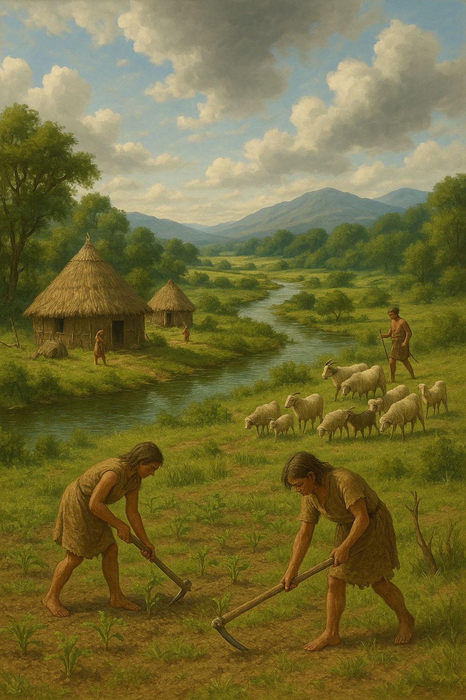
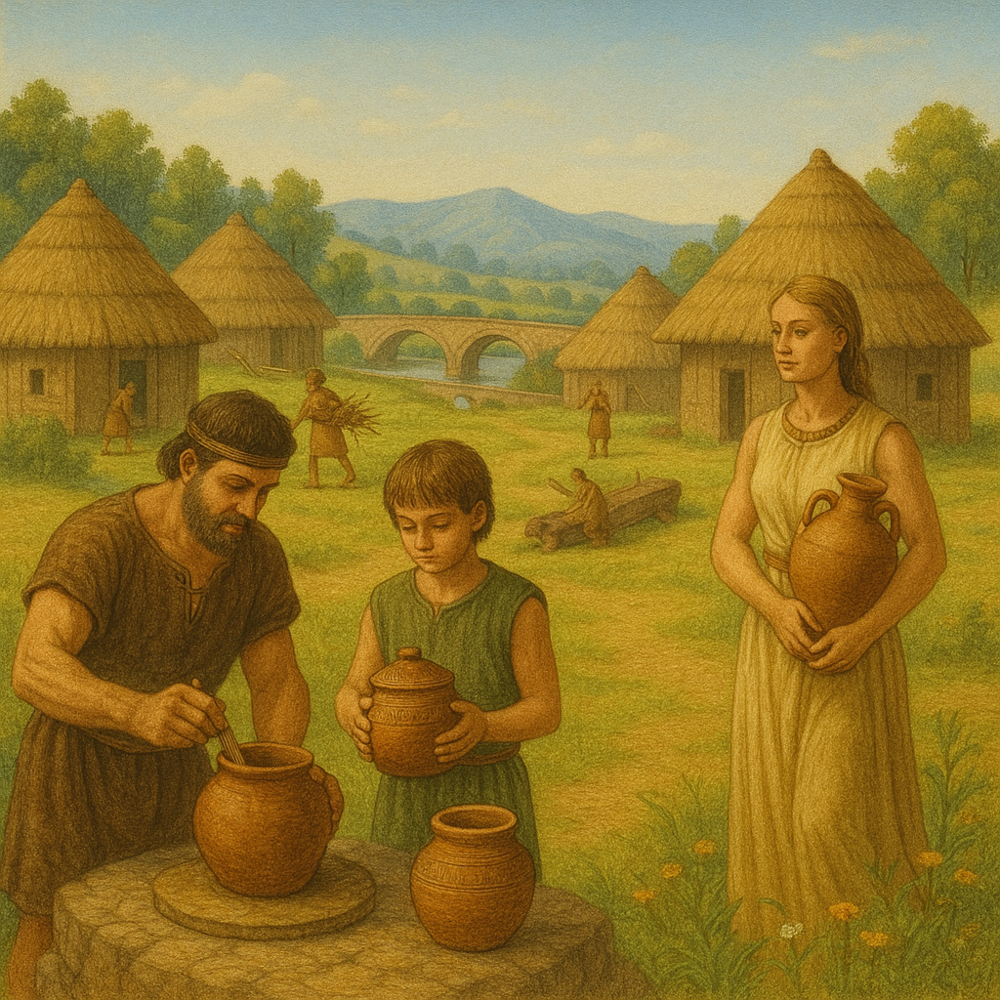
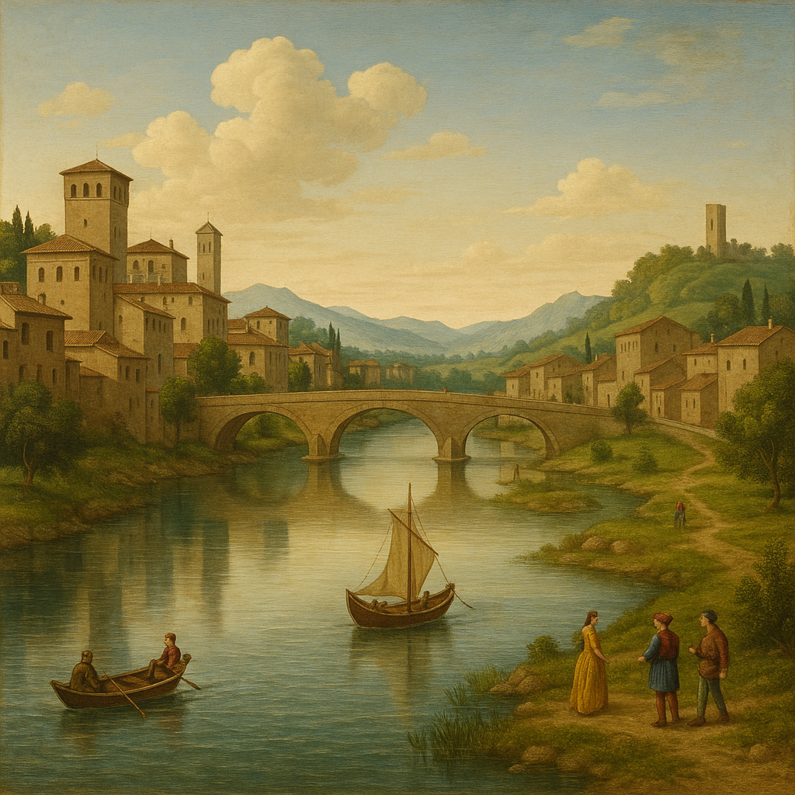
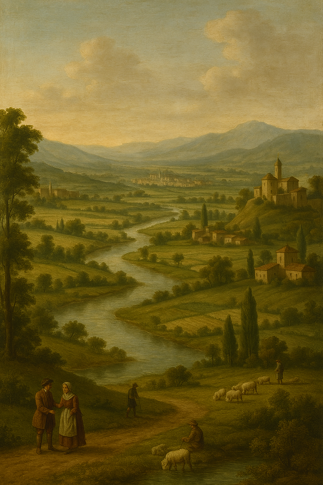

The History of the Clanis and Its Lands:
Prehistory and Natural Formations of the Val di Chiana

The Val di Chiana, stretching between Tuscany and Umbria, is a land shaped over millions of years by extraordinary geological and environmental forces. Before becoming the fertile plain we know today, it was an area rich in waters, lakes, and primeval forests.
Geological Origins
The valley originated between the late Pliocene and the Pleistocene epochs, following major tectonic movements that deformed the ancient Apennine ridge. Initially, it was a vast lake basin, known as the "Lake of Chiana," fed by rivers and abundant rainfall. Fine sediments carried by the water slowly accumulated on the bottom, creating the clay-rich and fertile soil typical of the region.
Natural Formations
- The surrounding hills, composed of layers of sand, clay, and marine fossils, bear witness to an ancient submerged past.
- Thermal springs, such as those at Chianciano and San Casciano dei Bagni, are the result of deep hydrothermal circuits formed after fractures in the Earth's crust.
- The Clanis River, once navigable, was the hydrographic heart of the valley before the Renaissance reclamation works that transformed the landscape.
Human Presence in Prehistory
The Val di Chiana has been inhabited since prehistoric times:
- Remains of Paleolithic and Neolithic settlements testify to the presence of groups of hunter-gatherers and, later, early farmers.
- Flint tools, worked bones, and primitive pottery have been found throughout the valley.
- The first communities settled on elevated areas near water sources, taking advantage of natural resources for hunting, fishing, and gathering.
The Historical Evolution of the Clanis from the Neolithic to the Iron Age
The Clanis River, a key figure in the ancient history of the Val di Chiana, underwent profound natural and cultural transformations over the millennia. Between the Neolithic and the Iron Age, its course and the surrounding landscape changed radically, deeply influencing the lives of the communities that settled there.
During the Neolithic period, the Val di Chiana was characterized by an environment dominated by lake basins and vast marshlands. At this early stage, the Clanis was not a well-defined river but rather a network of shallow waters fed by springs, rainfall, and small streams. The landscape featured ponds, wetlands, and humid forests, providing an ideal habitat for the first human communities. Neolithic settlements developed on natural elevations or river islands, safe and protected places from flooding. Here, people practiced rudimentary agriculture, cultivating cereals and legumes, alongside livestock breeding and fishing. The waterways, in addition to providing vital resources, served as the first channels for communication and exchange among different groups.
As time progressed and the Bronze Age began, the valley’s climate became more stable. The water basin of the Val di Chiana slowly began to recede: sediment accumulation contributed to the drying out of many swampy areas, shaping a different landscape where the Clanis started to form into a true river, although it still had a slow and winding course. During this period, human settlements along the river multiplied, encouraged by the greater availability of arable land. People began to build rudimentary canal works to better manage the waters and protect against flooding. Villages became more stable, and agricultural and pastoral activities intensified, while the Clanis itself started to serve as a natural route for exchanges and contacts between regional populations.
With the advent of the Iron Age, the Clanis established itself as a true river corridor. Now defined in its course, it still bordered marshy areas but had become a more stable and predictable feature of the landscape. The populations of the Villanovan culture settled permanently along its banks, taking advantage of the extremely fertile alluvial soils. During this time, the systematic exploitation of the river's resources began: fishing became organized, agriculture expanded on a larger scale, and trade along water routes intensified. The Clanis connected the Val di Chiana to Lake Trasimeno, the Tiber River, and ultimately to the Tyrrhenian Sea, serving as a commercial artery that fostered contacts and exchanges among the Tyrrhenians, Umbrians, and Sabines.
Along its course, structured and well-organized villages arose, often equipped with fortifications, and necropolises developed, testifying to a growing social complexity. The strategic importance of the Clanis laid the groundwork for the later development of Etruscan civilization, which would inherit and perfect many of the settlement, agricultural, and commercial practices already initiated during this era.
The Villanovans in the Clanis Valley
The presence of the Villanovans in the region of the Clanis River, corresponding to today’s Val di Chiana, represents a crucial phase in the history of central Italy, marking the transition from prehistoric communities to more complex societies that would eventually give rise to the Etruscan civilization.
The Geographical and Environmental Context
During the Iron Age (around the 9th–8th centuries BC), the Clanis River flowed through the Val di Chiana, creating a favorable environment for human settlement. Its slow, navigable waters and fertile alluvial lands offered abundant resources for agriculture, fishing, and transport. This natural setting attracted Villanovan communities, who settled along its banks, taking full advantage of the river’s opportunities.
Villanovan Settlements
The Villanovan culture is distinguished by its characteristic pottery, including vases decorated with geometric patterns and biconical urns used for cremating the dead. Bronze artifacts such as fibulae (brooches) and lunate razors have also been found, testifying to the craftsmanship of these communities. These finds, often discovered in necropolises, provide valuable insights into the funerary practices and religious beliefs of the Villanovans.
The Evolution Toward the Etruscan Civilization
Over time, the Villanovan settlements in the Clanis region developed and evolved into more complex urban centers that would become part of the Etruscan civilization. The agricultural knowledge, metallurgical skills, and social structures of the Villanovans laid the foundations for the Etruscan culture, which would dominate the region in the centuries that followed.
In summary, the presence of the Villanovans along the Clanis River represents a fundamental chapter in the history of the Val di Chiana, marking the beginning of a cultural and social development process that would lead to the flourishing of the Etruscan civilization.
The Etruscans in the Clanis Valley

With the beginning of the 7th century BC, the Clanis Valley became one of the main stages of Etruscan civilization. Building upon the legacy of Villanovan cultures, the Etruscans profoundly transformed the territory and its organization. They introduced a new concept of settlement, resource exploitation, and landscape management to the valley.
A Strategic Territory
The valley's location was of extraordinary importance: the Clanis River, still navigable along much of its course, provided a direct connection between the interior of the peninsula and the Tyrrhenian coast, via the Tiber River. Controlling the Clanis meant dominating a vital commercial hub where goods, people, and ideas circulated freely.
The Etruscans, skilled merchants and farmers, understood the river's potential. Along its course, new fortified settlements arose, serving as political, economic, and military outposts. The valley thus became an important corridor linking the inland cities of Etruria with those closer to the sea.
Transforming the Landscape
The Etruscans did not merely inhabit the territory—they actively transformed it. Through canalization and reclamation works, they reduced the extent of marshlands, increased the amount of arable land, and made the Clanis more regular and navigable. They built artificial canals, embankments, and drainage systems, greatly enhancing the valley’s agricultural productivity.
The cultivation of cereals, vines, and olive trees intensified, while livestock farming also became increasingly important. The agricultural production of Etruscan Val di Chiana not only supported the local population but also fueled trade with other city-states and the wider Mediterranean world.
Urban Life and Culture
In the major Etruscan centers of the region—such as Chiusi (Clevsin) and Cortona (Curtun)—advanced forms of urbanization developed. Cities were equipped with walls, temples, marketplaces, and monumental necropolises. The presence of tumulus tombs, richly decorated funerary complexes, and refined grave goods demonstrates the high level of Etruscan society in the valley.
Local ruling classes controlled not only the land but also the river traffic along the Clanis. Etruscan merchants exported wine, fine pottery, and worked metals, while importing luxury goods from the Greek, Phoenician, and Eastern worlds.
Culturally, the valley was a vibrant hub of artistic production: painted vases, sculptures, and inscriptions in the Etruscan language have been found in abundance, indicating a dynamic, complex society open to external influences.
The Decline
Etruscan dominance in the Clanis Valley began to decline progressively from the 4th century BC, under increasing pressure from Rome. However, the Etruscan legacy endured: many of the hydraulic and agricultural infrastructures built during the Etruscan period continued to be used for centuries afterward, influencing the territorial organization of the valley well into Roman times and beyond.
Rome and the Clanis River

With the gradual expansion of Rome into central Italy between the 4th and 3rd centuries BC, the Clanis Valley and its river system also came under Roman control. The ancient river, which had witnessed the flourishing of Villanovan and Etruscan settlements, thus entered a new historical phase of political, economic, and environmental transformation.
Territorial Control
The Roman conquest of Etruria, culminating in the subjugation of Chiusi and other Etruscan city-states, led to the complete integration of the Val di Chiana into the Roman system. For Rome, controlling the Clanis meant ensuring a safe and direct route between the north and south of the peninsula, vital for both military and commercial purposes.
Thanks to its slow, navigable course, the Clanis continued to serve as a valuable communication route. Goods—especially grain, wine, oil, ceramics, and building materials—could be transported along the river to the Tiber, and from there to Rome and the major Tyrrhenian ports.
Roman Reclamation Works
However, for the Romans, the marshy and unstable landscape of the valley also posed a problem. Although extremely fertile, the wetlands were unhealthy and hindered land communication. Rome thus undertook vast reclamation and canalization projects.
Through the construction of artificial canals, drainage ditches, and embankments, they sought to better regulate the Clanis, reducing the extent of the marshlands and increasing the amount of arable land. These projects, which continued over the centuries, profoundly transformed the valley, making it one of the most productive agricultural areas in Italy.
Moreover, the Romans built roads—such as sections of the Via Cassia and other secondary routes—that ran alongside the Clanis, making travel between the various towns of the valley and Rome itself easier.
The Clanis as an Economic Artery
During the Republican and Imperial periods, the Clanis became part of a wider economic system. It was not just an agricultural river but a commercial corridor that guaranteed the transport of local goods and helped integrate the Val di Chiana into the broader Mediterranean economy. Along the river, *villae rusticae*—large agricultural estates owned by Roman aristocrats—were established, producing grain, wine, and oil for the Roman market.
Villages and towns along the Clanis were equipped with typical Roman structures—forums, temples, baths, and amphitheaters—culturally transforming the valley as well.
Environmental Changes
Paradoxically, however, human intervention, while improving productivity, also slowly altered the natural balance. The large hydraulic works, though reducing marshlands, changed water flows, making some areas more prone to irregular flooding. With the gradual decline of the Roman Empire, the maintenance of the reclamation works faltered, and the Clanis progressively began to flood parts of the valley again, ushering in a new cycle of unhealthy conditions that would characterize the Middle Ages.
The relationship between Rome and the Clanis River was strategic, economic, and engineering-based. Rome saw in the Clanis not just a natural resource to exploit but a territory to be reshaped according to its models of organization and production. The traces of this transformation are still visible today in the archaeological remains scattered throughout the Val di Chiana and in the very contours of the landscape.
The Decline of the Clanis in the Final Centuries of the Roman Empire

During the early centuries of the Roman Empire, the Clanis maintained a strategic role in the economic life of the Val di Chiana. However, starting from the 3rd century AD, a series of political, economic, and environmental changes began to progressively diminish the importance of the river and the activities surrounding it.
The Crisis of the 3rd Century
The 3rd century was a time of deep crisis for the Roman Empire: civil wars, barbarian invasions, epidemics, and a sharp decline in agricultural production undermined the political and economic stability of the entire imperial territory. Even the Val di Chiana, although relatively distant from the main routes of the invasions, suffered from these upheavals.
The commercial network that had supported river traffic along the Clanis for centuries weakened drastically. With the collapse of major urban markets and the decline of the landowning aristocracies that managed the villae rusticae, agricultural production decreased, and the transport of goods lost its importance.
The Deterioration of Hydraulic Works
Another crucial factor was the progressive abandonment of reclamation and hydraulic maintenance works. During the golden centuries of the Empire, the Clanis and the valley had been carefully managed through a system of canals, locks, and embankments. With political instability and the dwindling of available resources, the maintenance of these structures ceased.
The river, no longer contained, began to expand into the surrounding areas. Marshes, which had never completely disappeared, once again spread, progressively transforming large parts of the valley into unhealthy and hard-to-cultivate environments. Navigation, hindered by sedimentation and the expansion of wetlands, became increasingly difficult.
From the Clanis as a Trade Route to the Clanis as an Obstacle
By the 4th and 5th centuries AD, the Clanis was no longer a major commercial route but rather a natural barrier, difficult to cross and a source of disease. Malaria, which had already affected central Italy in earlier times, reappeared in the marshy areas of the Val di Chiana, contributing to the depopulation of many rural zones.
The few surviving settlements withdrew to higher ground or safer areas, away from the flooded plains. The ancient Etruscan and Roman cities entered a phase of progressive decline or were reduced to small fortified villages.
The End of Antiquity
With the fall of the Western Roman Empire in 476 AD, control over the valley completely vanished. The Val di Chiana became a marginal region, crossed over the following centuries by barbarian peoples and contested by local powers. The Clanis, now lacking centralized hydraulic management, continued to reshape the landscape uncontrollably, reinforcing its character as an unstable river and a challenging territory.
It was only much later, between the Middle Ages and the Modern Age, that new and massive reclamation efforts would be undertaken to restore the valley’s ancient fertility.
The Clanis River in the Middle Ages

After the fall of the Western Roman Empire in 476 AD, the Clanis Valley entered a long phase of transformation and decline that would characterize the entire Middle Ages. The river, which for centuries had been an important commercial route and a fundamental agricultural resource, radically changed its role and appearance.
The Return of the Marshes
With the collapse of imperial authority and the absence of centralized water management, the reclamation and canalization works built during Roman times were abandoned. Without maintenance, the Clanis began to behave as it had in ancient times: it overflowed frequently, creating vast marshlands along its course.
These marshes made much of the Val di Chiana unhealthy and difficult to inhabit. Malaria, already widespread in the late Roman period, took deep root in the valley, contributing to the depopulation of the plains. Medieval settlements withdrew to higher ground and surrounding hills: fortified villages such as Cortona, Chiusi, Montepulciano, and Castiglion Fiorentino either emerged or were strengthened, offering safer and healthier alternatives to the lowlands.
The Clanis as a Natural Border
During the Middle Ages, the Clanis also assumed an important strategic and defensive function. Being difficult to cross—especially near the marshes—it became a natural boundary between various local powers. The valley was often contested by cities, bishoprics, and lordships seeking control over the few safe crossings and the main roads that traversed the region.
Particularly between the 11th and 13th centuries, the Val di Chiana was the subject of a long rivalry among Arezzo, Siena, Orvieto, and later Florence. Control of the water resources and the routes along the Clanis was seen as strategic for trade, warfare, and territorial dominance.
Attempts at Control and the First Medieval Hydraulic Works
Despite the difficulties, as early as the Early Middle Ages (8th–9th centuries), there were local efforts to contain the expansion of the marshes and make some areas productive again. Monasteries, rural churches (*pievi*), and peasant communities undertook small-scale drainage works: they dug ditches, built small canals, and raised agricultural land using rudimentary techniques.
These efforts, however, were often limited and at the mercy of the river's whims. Only in a few areas was it possible to reclaim arable land, while most of the valley remained dominated by stagnant waters and a wild, untamed environment throughout the Middle Ages.
The Cultural Perception of the Medieval Clanis
In the Middle Ages, the Clanis was no longer seen as a positive resource but rather as a threatening presence. Chronicles, notarial documents, and municipal statutes often describe the river and its marshes in terms of danger: as sources of disease, isolation, and famine.
This change in perception deeply influenced the collective imagination: the Clanis became associated with malaria, water spirits, land degradation—a sort of "dark river" to be feared rather than exploited.
In conclusion: during the Middle Ages, the Clanis shifted from being a vital commercial corridor to a natural obstacle, difficult to manage and a source of serious environmental and health problems. Only toward the end of the Middle Ages and the beginning of the modern era would the foundations be laid for the major reclamation projects that would once again change the fate of the valley.
The Clanis River During the Renaissance
During the Renaissance, between the 15th and 16th centuries, the Clanis River and the entire Val di Chiana entered a new phase of their long history, marking the transition from an abandoned and unhealthy valley to a territory targeted by ambitious reclamation and recovery projects.
After the dark centuries of the Middle Ages, the Renaissance brought a renewed interest in hydraulic engineering, agriculture, and territorial rationalization. The major Tuscan cities—especially Florence under the rule of the Medici—saw in the reclamation of the Clanis Valley not only an economic opportunity but also a technical challenge reflecting the new ideals of order and progress.
During the Renaissance, the Clanis remained a dominant presence, but its nature had profoundly changed compared to antiquity. No longer a navigable river vital for commerce, it had become a slow and unstable watercourse that fed vast marshlands. These marshes, once natural defenses against invasions, were increasingly seen as a problem to be solved: they hindered travel, reduced agricultural productivity, and fostered the spread of diseases such as malaria.
The Grand Duchy of Tuscany, led by the Medici family, launched a series of systematic interventions to regulate the course of the Clanis and reclaim the surrounding lands. Drainage canals, embankments, locks, and diversion works were designed and built with the aim of drying out stagnant waters and restoring agricultural vitality to the valley. One of the most delicate undertakings was the diversion of the Clanis waters toward the Arno River, permanently altering the natural hydrographic system of the region.
The reclamation works were slow and complex, often hindered by technical difficulties, unpredictable climatic events, and political conflicts between Florence, Siena, and the Papal States, all of which claimed rights over the waters and the lands.
Despite these challenges, the Renaissance marked the beginning of the transformation of the Val di Chiana into one of the most fertile agricultural plains in Italy. The Clanis, once an uncontrollable and feared river, became a regulated and managed element, functional to a broader project of agricultural, urban, and commercial development.
This new water management perfectly reflected the Renaissance spirit: humanity’s will to tame nature, to rationalize the landscape, and to build an orderly and functional world according to mathematical, engineering, and political principles.
The Clanis River from the Post-Renaissance to the Modern Era
After the end of the Renaissance, the Clanis River and the Val di Chiana entered a period of great transformation. The reclamation works initiated by the Medici had attempted to reduce the extent of the marshlands and control the river’s flooding, but the results were still partial. The Clanis remained an unstable presence, prone to overflowing, and many areas of the valley continued to be unhealthy and only marginally productive. The ancient river, once a vital commercial artery, was now seen more as an obstacle to manage than as a natural resource. Despite the Renaissance engineering efforts, the landscape of the Val di Chiana still retained the appearance of a land suspended between swamp and countryside, unable to fully express its agricultural potential.
The Lorraine Project: Scientific Reclamation
With the extinction of the Medici dynasty and the rise of the House of Lorraine in the 18th century, the destiny of the valley changed definitively. The Lorrainers introduced a more modern and scientific approach to water management. Relying on the studies of expert hydraulic engineers, they launched an extensive plan for hydrographic reorganization, aiming not only to drain the marshes but also to reconstruct the entire territorial structure of the valley.
The most ambitious project was the construction of the Canale Maestro della Chiana (Master Canal of the Chiana), which definitively diverted the waters of the Clanis toward the Arno River. This monumental work allowed the drainage of the lowest areas and made it possible to rationally subdivide the agricultural lands. Thus, the valley was progressively reclaimed and transformed into a vast cultivable plain, where the ancient course of the Clanis was completely integrated into a regulated canal network.
The 19th Century: The "Granary of Tuscany"
In the 19th century, the Val di Chiana reached the peak of its agricultural transformation. The valley became famous as the "Granary of Tuscany" due to the abundance and quality of its agricultural production. The farms were distributed according to geometric and rational criteria, country houses rose at the center of the reclaimed fields, and crops of cereals, vines, and olives came to permanently characterize the landscape.
Malaria, which had plagued the valley’s population for centuries, was progressively eradicated thanks to the drastic reduction of marshy areas. The new organization of the Tuscan countryside not only ensured consistent agricultural production but also reflected the new political and economic principles that saw rational land management as a hallmark of modern civilization.
The Modern Era
With the arrival of the 20th century, the Val di Chiana consolidated its agricultural role, incorporating modern practices such as mechanization and the introduction of new agronomic techniques. Nevertheless, the ancient imprint left by the great reclamations remained visible: the farms continued to follow the regular pattern imposed by the Lorraine transformations, and the Canale Maestro della Chiana—the direct heir of the Clanis—continued its task of regulating the valley’s waters.
The historical memory of the Clanis, although somewhat faded in common language and place names, lived on in the very organization of the territory and in the material culture of the region. Today’s Val di Chiana thus presents itself as the result of a very long evolution that, starting from the ancient Clanis, has arrived at the present day, transforming a marshy valley into one of the most fertile agricultural plains in Italy.